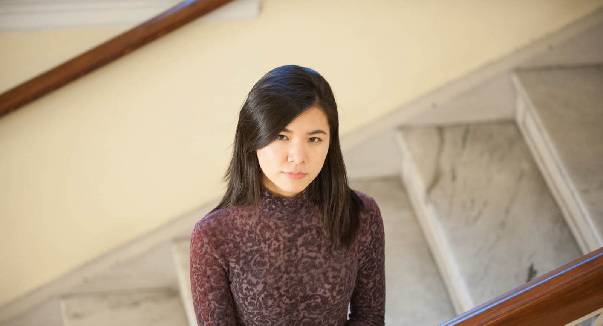

Biography

Dr. Hanzheng Li, a Bay Area-based pianist, has performed as a soloist and chamber musician across Europe, North America, and China. Notable venues include Carnegie Weill Hall, Boston Symphony Hall, Kresge Auditorium, and Jordan Hall.
Background
Hanzheng received her DMA in Collaborative Piano, dual Master's degrees with honors in piano performance and collaborative piano, as well as a Graduate Diploma from the New England Conservatory (NEC). She also holds a bachelor's degree in piano performance at the Shanghai Conservatory of Music. Her DMA thesis Reimagining Mignon: Exploration of Intertextual Relationships in Aribert Reimann's Schubert Adaptation examines intertextual relationships in Aribert Reimann's Mignon for soprano and string quartet (1995), a modern adaptation of songs by Franz Schubert on poems from Goethe's novel Wilhelm Meister's Apprenticeship. Starting piano at age four and a half, she won First Prize at the Golden Key National Keyboard Competition at eight, released several albums, and has since garnered numerous awards, including in the Gulangyu National Piano Competition (2006), KAWAI National Piano Competition (2007), and International Keyboard Odyssiad Competition (2014). Her teachers are Chenbin Wu, Weiming Li, Denghui Huang, Yizhe Hong, Minduo Li, Yun Sun, Victor Rosenbaum, Vivian Weilerstein, Pei-Shan Lee, Jonathan Feldman, and Cameron Stowe.
Performing
As a soloist and enthusiastic chamber musician, Hanzheng has been invited as a fellow or awarded full scholarship to the Bowdoin International Music Festival, Toronto Music Festival, SongFest, Cremona International Music Festival, and Beijing International Music Festival. She has worked with artists like Nelita True, Boris Slutsky, Susan Graham, James Conlon, and Jake Heggie. Highly sought after as a collaborative pianist, she has worked with prominent musicians such as Paula Robison, Donald Weilerstein, and Paul Katz at NEC. She serves as a pianist for voice and instrumental lessons, studio classes, competitions, recitals, juries, NEC's Concert Choir, and choral conducting classes for both undergraduate and graduate students, in addition to her role as an audition pianist for NEC and the Longy School of Music of Bard College.
Teaching
With nearly twenty years of teaching experience, Hanzheng has guided students at all levels, many of whom have won top prizes in international, national, and regional competitions. At NEC, she served as a teaching assistant in the Piano, Collaborative Piano, and Theory Departments, where she taught piano and theory to undergraduate and graduate students and coached singers. She also earned a Music-in-Education concentration from NEC and served as a teaching fellow and translator for the US-China Music Festival and Workshop from 2015 to 2016. In addition, she has been invited to serve as an adjudicator for the United States Open Music Competition and the San Francisco International Piano Competition, as well as an evaluator for MTAC's Certificate of Merit examinations.
Community Outreach
Hanzheng is deeply committed to community engagement. As Secretary and Council Member of the Boston Chinese Musicians Association, she organized performances of Dream of the Red Chamber for Chinese artists, facilitated collaborations among local musicians, and established cross-industry partnerships from 2015 to 2016. As a fellow of NEC's Community Performances and Partnerships Program, she led outreach initiatives, bringing interactive concerts to nursing homes, schools, and senior centers, fostering meaningful connections between music and diverse audiences.